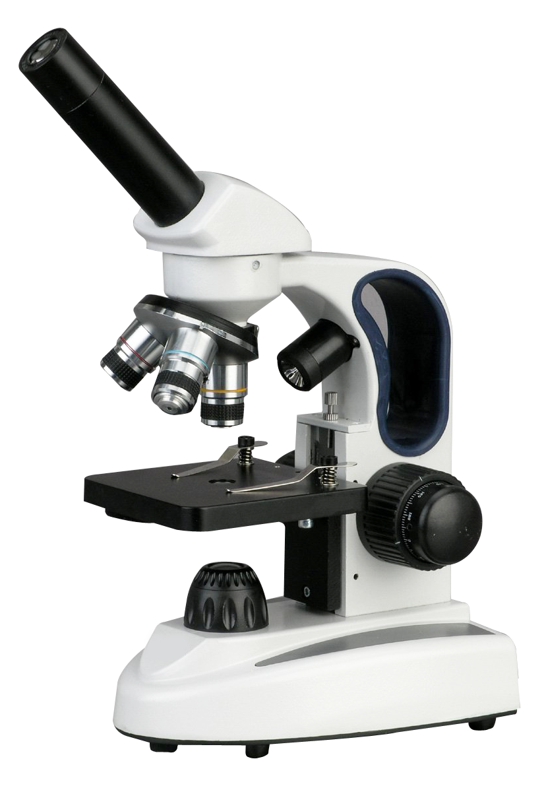

Увод
Mоћ разлагања тј. минимално растојање између две блиске тачке које се још могу јасно распознати као две
одвојене целине пре него што настане њихово сливање у једну тачку за људско око је свега 0.2 mm.
Шта је микроскоп?

Човек је вероватније случајно открио да стакло одређеног изгледа, или можда кап воде, увећавају. Свесно
су усавршена сочива са циљем да увећања буду већа, а слика објективнија. Направљена је лупа, једноставан
микроскоп са једним сочивом. Ускоро је настала и лупа са системом сочива. Она је била већег увећања и
боље је исправљала грешке у слици предмета. Када се по оптичкој оси поставе два сабирна сочивасочива,
настаје оптички
микроскоп.
Сабирна сочива су постављена на крајевима цеви при чему дужина цеви може да се
мења
помоћу посебног механизма. Сабирно сочиво које је окренуто према предмету посматрања назива се објектив,
а
сочиво које које се налази уз око назива се окулар.
Реч микроскоп је грчког порекла и настала је спјањем две речи, "mikron" што знаћи мали и "scopos" што значи
циљање. Постоје две основне врсте микроскопа, оптички и електронски:
- Оптички, светлосни, микроскоп се користи за мања увеличавања и основни је предмет у свакој
школи, тј у кабинетима хемије.
- Електронски микроскоп служи за већа увеличавања и користе се у професионалне сврхе при
проучавању вируса и бактерија као и најситнијих делова сваке ћелије.
Увећање класичних оптичких микроскопа ограничено је њиховом моћи разлагања. Моћ разлагања је сразмерна
таласној
дужини употребљене светлости. Зато микроскопи који користе ултраљубичасто зрачење имају већа увећања од
оптичких.
Увећање класичних микроскопа, који користе видљиву светлост је око 1000. Ово увећање не може да се
повећа
побољшањем квалитета сочива и зависи само од таласне дужине коришћене светлости. Даље повећање лика
доводи
до губитка његове оштрине (јасноће).
Захваљујући таласним својствима електрона, конструисан је електронски микроскоп који поседује
многоструке
предности на оптичким.